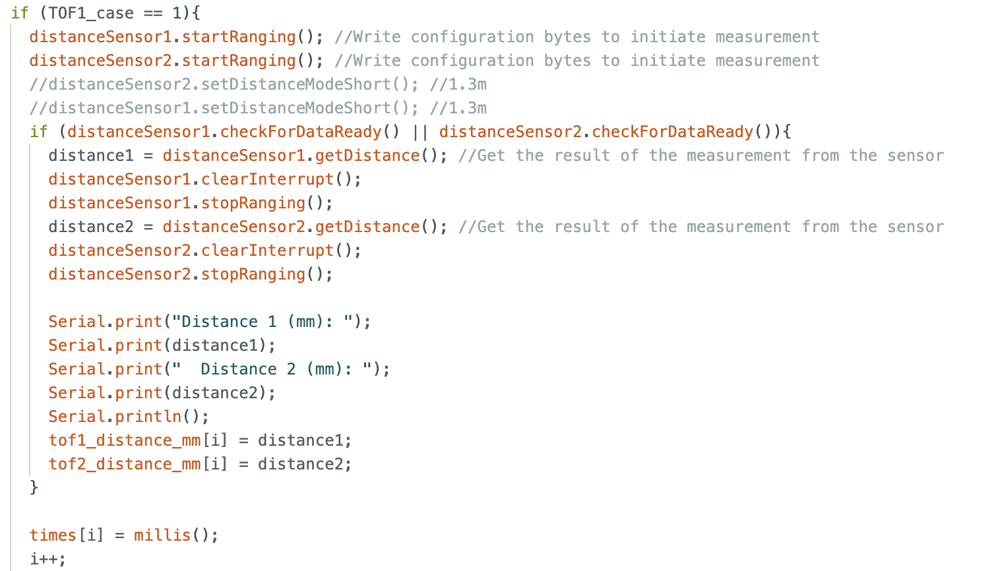
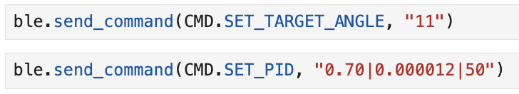
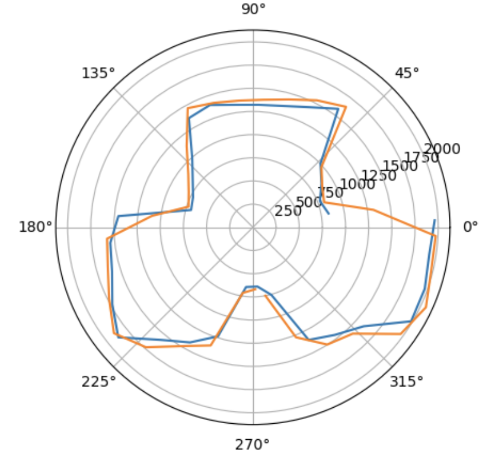
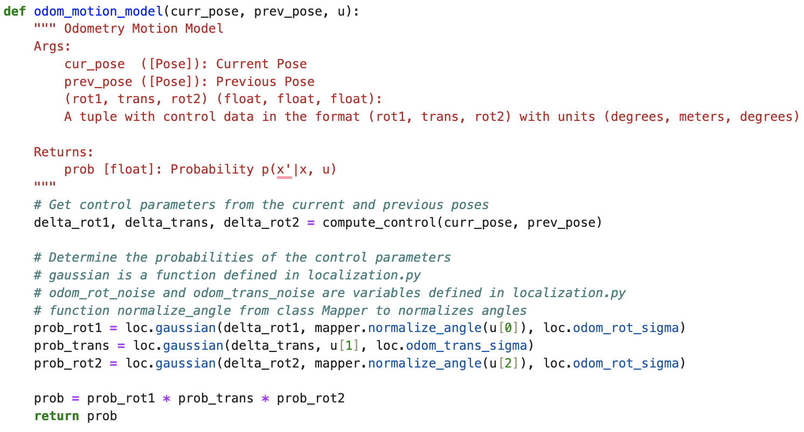

Hi! This is my home page for my ECE 4160 labs. I am a Senior MechE student at Cornell University and I am interested
in robotics for extreme environments such as space! I am currently building a
bipedal robot for my project team Cornell Cup Robotics!
Lab 1
Introduction
Lab Objectives
The objective of this lab is to set up and become familiar with the Arduino IDE and the Artemis board. We set up the board and downloaded
the necessary packages to facilitate sending messages from the board to our computer over Bluetooth. Using the Arduino examples, we the
practiced reading/writing serial messages over USB.
Components
1 x SparkFun RedBoard Artemis Nano
1 x USB C-to-C or A-to-C cable
Janurary 24th
Prelab
Artemis Board Set up
I started with downloading the Arduino IDE and setting up the SparkFun RedBoard Artemis Nano with these
instructions
I plugged the board into my computer and I ensured the Arduino IDE was able to locate it and selected the appropriate port (see the below screenshot)
Tasks
1. I tried various example codes provided by the Apollo dev kit starting with "Blink" In File->Examples->Basics, here is a video of what happened once I uploaded the code to the board.
2. Next, I tried "Example4_Serial" In File->Examples->Artemis Examples, here is what printed out in the serial monitor once I uploaded the code onto the board.
3. The next task was to test the temperature sensor with "Example2_analogRead" File->Examples->Artemis Examples. In this video, you can see the temperature values increasing when I hold my finger over the sensor.
4. Lastly, I tested the microphone with the sample code "Example1_MicrophoneOutput" in File->Examples->PDM. In this video, I play a constant note and in the serial monitor, you can see the frequency change and hold constant.
Setting up Bluetooth connection
Computer set up
I first started by verifying what version of Python and Pip I had using the macOS terminal.
I confirmed I had the latest releases (Python >= 3.9 and pip >= 21.0)
Then I installed the virtual environment using the following commands:
python3 -m pip install --user virtualenv cd /Users/patty/Documents/fastrobots python3 -m venv FastRobots_ble
To start the virtual environment use this command:
source FastRobots_ble/bin/activate
To confirm you are in the virtual environment you should see the prefix (FastRobots_ble) before each command:
Artemis Board Setup
Install ArduinoBLE from the library manager (Tools -> Manage Libraries…) in the Arduino IDE.
Open and run ble_arduino.ino into the Artemis board from the directory ble_arduino in the codebase.
The Artemis board should now print its MAC address. My MAC address: C0:83:0C:69:AC:3C
I downloaded the provided codebase into my project directory. I copied the "ble_python" directory into my project directory.
And finally, I started the Jupyter server by typing in the command:
Jupyter lab
LAB 1.2
Introduction
Lab Objectives
The objective of this lab is to continue from lab 1 and test the Bluetooth connection between
the board and our laptops. We practiced sending timestamped messages from the Artemis board, and
how to use notification handlers in Jupyter Notebook to receive and handle these messages.
Components
1 x SparkFun RedBoard Artemis Nano
1 x USB C-to-C or A-to-C cable
Janurary 29th
Set up
How to log back into virtual machine
Open the terminal and type these 3 commands one at a time. This navigates to the correct directory,
opens the virtual machine, and starts the Jupyter Notebook tab on my browser.
cd /Users/patty/Documents/fastrobots source FastRobots_ble/bin/activate Jupyter lab
Configurations
I made a copy of the ble_arduino.ino file, and the demo.ipynb file and did the rest of the lab tasks there.
I added added MAC address here in the connection.yaml file from the project directory.
What is a UUID? It stands for Universally Unique Identifiers and they help differentiate the
different kinds of data that we are sending.
Run these two lines in a code block in Jupyter Notebook to generate a new UUID.
from uuid import uuid4 uuid4()
With a newly generated UUID, copy and paste it into these two locations. In the connection.yaml file and in the
ble_arduino.ino file. Make sure the UUIDs used in the Arduino sketch always match those used by Python in the configuration
file (connection.yaml).
Practice!
Tasks to practice receiving messages from the Artemis board
I am connected to Bluetooth!
1. Send an ECHO command with a string value from the computer to the Artemis board,
and receive an augmented string on the computer.
In my Python script, I am using the send_command() function which
sends a string data to the GATT characteristic (TX_CMD_STRING). Then there is a case called "ECHO" in my Arduino script that received the message
and manipulates the string. I have it print to the Arduino serial (for testing purposes) and then I have it send the edited string back with the writeValue() function.
since I have a receive_string() function, it reads the most recent string message and prints it out to the Python script.
2. Add a command GET_TIME_MILLIS which makes the robot reply write a string such as “T:123456” to the string characteristic.
This command is similar to the case before, except I sent the Arduino an empty message since it just
wanted to trigger code in the GET_TIME_MILLIS case in Arduino. Once that case was called, it used the millis() function to generate a time in milliseconds. It is important to clear the string,
then append the parts I need every time becuase I was sending multiple different messages between the two. Again, I have a receive_string() function in my python that reads the string and
prints it out.
3. Set up a notification handler in Python to receive the string value from the Artemis board.
In the callback function, extract the time from the string.
In my notification handler I look for the "t" character in the string. Then I have an if statement basically so it
only continues if it can find that t. Then it manipulates the string to only have the time as a float, then I store it in an array called time_msg. The start_notify funciton activated the notification hanlder.
so it is constantly running and will automatically read the messages sent from the Arduino of the proper type.
4. Write a loop that gets the current time in milliseconds and sends it to your laptop to be received and processed
by the notification handler. Collect these values for a few seconds and use the time stamps to determine how fast messages
can be sent. What is the effective data transfer rate of this method?
In python I sent the command TIME_TEST, wich corresponds to the case in the ardino code. this is a loop that runs a set number of times
(in this case 1000) and it reads the current time in milliseconds and sends it as a string. now that my notification handler is running, it knows how to edit this string, every time this
loop runs. I have a second block of code that is to find the data transfer rate. Once the loop is finished running, it uses the first and last time values to find the total rate of message transfer.
in this case, the time was 133.6005 messages sent per second.
5. Now create an array that can store time stamps. This array should be defined globally so that other functions can access it if need be.
In the loop, rather than send each time stamp, place each time stamp into the array.
Then add a command SEND_TIME_DATA which loops the array and sends each data point as a string to your laptop to be processed. (You can store these values in a list in python to determine if all
the data was sent over.)
For this problem I made two separate cases to send commands to in the Arduino script. The first one FILL_TIME_ARRAY is to only
fill up an array with the times. The second case SEND_TIME_DATA, loops over the array and sends it all at once. I made another code block to test how many messages were sent per second and
with this method, 403.88 messages were sent per second.
6. Add a second array that is the same size as the time stamp array. Use this array to store temperature readings. Each element in both
arrays should correspond, e.e., the first time stamp was recorded at the same time as the first temperature reading. Then add a command GET_TEMP_READINGS
that loops through both arrays concurrently and sends each temperature reading with a time stamp. The notification handler should parse these strings and
and populate the data into two lists.
This one took a bit more problem solving so I made a separate notification handler for these types of messages. In the Python, I sent two separate commands to fill the arrays with data and
then to send it all at once because we proved earlier this was the faster way of sending data. FILL_TEMP_ARRAY filled both an array with temperatures and timestamps that coorespond to each. Then GET_TEMP_READINGS creates a string with an upper case T: for temperature and
a lower case t: for time from the timestamp array. Once all the data is appended to a string it is sent. this loops over the whole array of collected temperatures. In the notification handler, I look for the time and the temperature and extract them from the string.
Last, I printed them all out in nice columns.
7. Discuss the differences between these two methods, the advantages and disadvantages of both and the potential scenarios
that you might choose one method over the other. How “quickly” can the second method record data? The Artemis board has 384 kB of RAM. Approximately how much data can you store to send without running out of memory?
I calculated the time to send messages for both scenarios previosly in my script. The first method sent approximately 133 messages per second and
the second method was able to send approximately 404 messages per second. Then using our knowledge of the RAM capacity of the Artemis, I calculated that with method 1 I can send messages for over 5 minutes before I run out of storage
and with the second method I can send messages for 1.8 minutes before I run out of storage. The advantages of the first method is that we can send real-time transmission of data, as time stamps are sent immediately after being generated.
Disadvantages could be the slower rate of data transfer and higher potential for data loss or delays if the communication channel experiences congestion or interference. The second method, other than the speed, has the advantage of providing more flexibility in handling and processing data
on both the sender and receiver sides. A disadvantage could be having to wait till the array is filled to send the data, and having to make sure the array is not over-filled.
In the callback function, extract the time from the string.
Lab 2
Introduction
Lab Objectives
The objective of this lab is to add the IMU to the robot and to learn how to use readings from the accelerometer
and gyroscope. I learned how to filter data to get the most accurate reading. We also got to test out our stunt cars!
Components
1 x SparkFun RedBoard Artemis Nano
1 x USB C-to-C or A-to-C cable
1 x 9DOF IMU sensor
1 x Force1 RC car
1 x Li-Ion 3.7V 850mAh battery
Februrary 7th
Set up the IMU
1. In the Arduino library manager, install the SparkFun 9DOF IMU Breakout - ICM 20948 - Arduino Library
2. Connect the IMU to the artemis
3. Run the file “..\Arduino\libraries\SparkFun_ICM-20948\SparkFun_ICM-20948_ArduinoLibrary-master\examples\Arduino\Example1_Basics”
4. Look for the variable AD0_VAL, set it to zero.
(This variable represents the last bit of the i2c address of the IMU. It needs to be set to 0 or 1 depending on if the ADR jumper is closed)
I added a blinking light during startup as a visual indication that the board is running. Then I tested the accelerometer data with the serial plotter,
you can see as I flip the IMU in different ways how the lines fluctuate. The data is pretty noisy.
Accelerometer
Convert Accelerometer Data into Pitch and Roll
These are the equations I used to convert the raw accelerometer data into Euler angles (pitch and roll).
Here is a video of me holding the IMU steady with a pitch of -90 degrees and a roll of zero. I am printing the values in degrees to the serial monitor
of the Arduino. As you can see the accelerometer is pretty accurate so there is no need for a two-point calibration.
Analyzing The Frequency Spectrum
Because there is noise, it is good to analyze the data in the frequency spectrum, to see what frequencies of noise are prevalent
.I recorded accelerometer data on the Artemis and sent it over to my computer. I downloaded Scipy.fftpack package to graph the FFT.
Below is how I calculated the Fourier transform.
Below are my Fourier spectrum graphs for both pitch and roll when the IMU is flat on the table. The left is the raw data measurement and the right is the FFT.
I then tried adding a vibration by hitting the table. You can see in the amplitude graph where I hit the table, but the FFT graph still looks similar with larger magnitudes.
None of the frequencies stood out to me in the vibration test but the parts of the spectrum with the highest spikes occur at around 10 Hz and 35 Hz, I could not determine an
obvious cutoff frequency but I kept playing around with it and decided to start with a cutoff frequency of 10 Hz.
Applying Low Pass Filter
For the low-pass filter, to calculate my alpha value I used these formulas starting with the cutoff frequency (fc), and period (T) which is 1/sampling rate.
After yielding an alpha value of ~ 0.12, I used this formula for both pitch and roll to filter my raw accelerometer data.
Here is what my LPF looks like in the Arduino code.
This is a graph of the raw data and filtered data taken at the same time. This one is with the 10 Hz cutoff frequency. As you can see it is better but there is still
a significant amount of noise.
I tried filtering again but with a lower cutoff frequency of 4 Hz and I hit the table at the begining. This was significantly better at minimizing the noise.
I think my low pass filter overall worked great. The values it outputs for the angles are consistent. There is still a good amount of noise but
I cannot keep lowering the frequency cutoff value or else I will miss out on important signals from the sensors.
Gyroscope
Compute Pitch, Roll, and Yaw Angles
To convert the raw gyroscope data to Roll, Pitch, and Yaw angles, I multiplied the angle by a time increment dt and added it to the current angle.
Here is the code in my arduino.
This is a graph of gyroscope roll, pitch, and yaw vs time. I rotated the IMU back and forth as you can see from the occilations. The issue with the gyroscope is that it constantly "drifts".
As you can see the angels apear to be driting and increasing slowly even if i was retunring teh gyrosope to the same place each time.
The main differnce between the gyroscope data and the accelerometer data is that the gyrosope drifts from the start. Becuase the gyrposcope only measures relative angles, I need to always
initiallize the first position as zero. And lastly, the gyroscope has much less noise than the accleerometer data which is a big benifit. I tried playing around with the sampling rate
by adding in delays, I found that the longer the delay (lower sampling rate), the more the gyroscope values drift. Below is the data with keeping it still (my leg was tapping under the desk).
Complementary Filter
Combining Gyroscope data and Accelerometer Data
A complimentray filter can be uaed to combine the two types of data, gyroscope and accelerometer. It uses the most useufl parts from both and creates the most
accurate filter that is not susceptible to drift or quick vibrations. I tried various alpha values in order to determine wich filter to putthe most weight on.
The following is the equation for the complimentary filter.
To implement it on the artemis, I took the accelerometer low pass filter and gyroscope readings all together and passed it though my complimentary filter.
I decided to go with an alpha of 0.1. After many tries it seemed to be the best combination of the two. As you can see in the image below. The complimentary filter did a good job
of combineing the two filters. In these images I am just rolling it from -90 to zero to 90 and back to zero. In the roll graph, all the filters are fairly accurate so you dont see the
benefits of the complimentary filter as much, but in the pitch graph (I was trying to keep it constant) you can see how the complimentary filter kept the noise low and did not drift.
In this measurement of data I added vibrations and the filter did a good job. You can see especially see in the pitch graph where the complimentary filter
is not susceptible to the gyroscope drifting and is much less noisy then just the LPF filter.
Sample Data
Improving the way I Sample Data
After making sure all my filters were running smoothly, I implemented a few strategies to speed up the excecution of the main loop and the sampling rate.
I deleted all my comments, and removed all my delays. I also moved the part where I checked if the data is ready in the main loop (see below). I was able to record a sampling rate
of about 315 messages per secodn this way this is almost double what I had before.
Stunt Car!
Using Built-in Controller
Here I am performing several stunds using the car's original controller.
Lab 3
Introduction
Lab Objectives
The objectice of this lab is to start soldering components, we soldered the lithium-ion battery to the appropriate connector so we can use the
artemis board without needing to be pluggin in to our laptops. We also soldered the time of flight sensors to QWIIC Breakout board conenctor.
With the ToF sesors, I and learned how to read and send data with two identicle sensors. I also implemented ways to read sensor data as quick as possible.
Components
1 x SparkFun RedBoard Artemis Nano
1 x USB cable
2 x 4m ToF sensor
1 x QWIIC Breakout board
2 x Qwiic connector
1 x Measuring tape
Februrary 14th
Power up!
Power the Artemis with a battery.
I cut the current connector off the lithium ion battery cutting the wires one at a time! (so you don't complete the circuit with the scisors and short the battery).
Then I solderd the battery wires to the JST jumper wires and isulated the exposed wire with heat shrink. Below is the battery after I cut it and after I soldered the new connector on.
Next I powered the artemis with the battery alone (no usb into laptop). To make sure it worked still, I resetted the artemis and as you can see in the video
below, the blue light blinked 3 times. I had this blink sequence occur on startup in the code that I last uploaded to the artemis.
Next, I installed the SparkFun VL53L1X 4m laser distance sensor library and I connected the QWIIC break-out board to the Artemis.
Set up ToF sensors
Connect the first ToF sensor to the QWIIC breakout board.
I used the data sheet to create a plan on how I was going to solder the QWIIC cable to the first time of flight sensor. Once I decieded what goes where, I solderd it
directly on the boaard and used heat shrink on the ends. This was my first time soldering so I was nervous at first, I found the helping hands to be extemly helpful to not mess up.
Scan the I2C channel and test the first sensor.
I navigated to the example arduino code: File->Examples->Apollo3->Wire and open Example1_wire_I2C. When i ran that it printed out the adress 0x29, this is as excpeted as everyone else
in the class ahd thesaem adress sicne we all had identical components.
Next I ran the example: \Arduino\libraries\SparkFun_VL53L1X_4m_Laser_Distance_Sensor\examples\Example1_ReadDistance. As you can see in teh video below the sensor was woking!
As I got close to my screen, the numbers apporched zero.
Testing different sensor modes
Pros & Cons of each mode
I tested two modes on the sensor short and long. In the setup of the arduino script this is how I set the mode:
The short mode is best up to distances of 1.3m away but the default mode is long, which is most accurate at distances 1.3-4m away. Choosing wich mode to use is
dependant on the use of the robot. If you are naviagitng through tight obstacles that you might be running into a lot, the short mode is best so that you can react quickly. If you are trying to path plan
in a larger winding hallway the long range might be better so you can more acurately predict the turns it will take.
Below is an image of the test setup I did so I could test both modes at various distances. I set up a measuring tape and marked the specifc distances I wanted to test. I held the TOF sensor on a flat surface and
taped it down so it would always be in the exact same place. I moved a white cardboard box to the position and ran the sensor for 100 measurements, and repeated for both modes.
In the python script, I received the data and saved the mean of each distance measurement in an array. I tested both modes at 5cm, 10cm, 1m, and 2m. I then graphed the results
with a red dotted line showing where the actual measuremtns should be. As expected, the short mode sensor was closer to the actual values in the shorter range and the long mode was closer in the longer range.
I was suprised buy the undershoot of over 100 millimenters in both modes at the longest range. I thought it would be more accuratre. I think next time I should try other colours to reflect off of.
Setting up Both ToF Sensors
First method to record data with both sensors simultaniously.
Setting up two sensors required use of the xshut pin on one of the Sensors. I started out by soldering a wire to a digital pin on the artemis board and the xshut pin on one of the ToF sensors.
Then in my aduino code, in the setup loop I do the following operations:
1. I shutodwn sensor 2 by setting the xshut pin to low.
2. I begin sensor 1 and set a new I2C address for sensor 1.
3. I bring sensor 2 out of shutdown mode (set to to high).
4. I begin sensor 2 and set the I2C address for sensor 2 as default (0x29).
Now they are both connected with differnt I2C adresses!
Now you can see in this video, as I alternate bringing the sensors close to the table they read different values.
To send and recieve data to my computer, I set up a case that activates an if stateemnt in my void loop. So from my python script I call that case then the void loop will continuosly check if data is ready,
take data, store it in an array, and send it all at once. This is what that method looks like.
This method yeilded this graph when I alternated bringing the sensors close to the table.
Though this graph looks nice, the rate that the data is taken is very slow, this mehtod in the loop where I wait untill the data is ready to take the measurment is taking too long. The loop only runs at less than 8 messages per seond.
Quicker method to record data.
It is essential that the code executes quickly, therefore I cannot let it hang while it waits for the sensor to finish a measurement. This new method allowsd the loop to run, continuously with the only limiting factor
being how quickly each line excecutes and it reads and adds new ToF sensor data from both sensors only when available. Below is how I implemented, see the if statement.

As you can see the loop runs much faster now!
Now I am able to send timestamped messages and graph both sensors data more accuratly. There are spikes becuase the sensor is much slower than the loop, so all the points in betweeen the senssor being ready are zero.
I printed the data and measured the time between each spike as 0.101 seconds.
Finally, this is what the completely soldered component looks like!
Lab 4
Introduction
Lab Objectives
The objective of this lab is to set up the two dual motor controllers and spin the wheels! Once we attach those, we can solder all the components together and to the artemis so everything
can now sit on the car. I learned how to use a power supply and oscilloscope to verify functionality and I started calibrating the motors to move together with a linear relationship.
Components
1 x SparkFun RedBoard Artemis Nano
1 x USB cable
2 x 4m ToF sensor
1 x QWIIC Breakout board
2 x Qwiic connector
1 x JST2 connector+cable
1 x Force1 RC car
1 x Li-Ion 3.7V 850mAh battery
2 x Dual motor drivers
Februrary 21st
Prelab
Wiring Diagram
Here is the diagram of how I decided to wire the two motor controlers in parallel and to the artemis. Each motor controller needs two PWM pins becuase they each switch from
forward and backwards using PWM signal. Each board has 2 H bridges but we are only using one so I bridged both A1, B1 together and A2, B2 together. I decided to solder 3 wires together
for the motor controllers and battery to simplify the wiring, it's all grounded and power is deliverd to both boards. We are powering both motor controllers seperatly from the artemis
battery becuase running the motors drains the battery much quicker than the artemis.
And here is how one of the soldered boards look!
Dual Motor Driver Setup
Testing the first motor controller.
Next I soldered the first motor contorller to the artemis, but connected the Vin and ground wires to the power supply, and the signal out wires to the oscilloscope. Here is
a picture of my setup. And this is the code that I sent the artemis to send a pulse signal to the motor contoller with a delay. I set the power supply to 3.7V as the data sheet suggested.
On the oscilloscope, I could change the size of the square wave based on how long the delay was and the size of the signal. This first picture of the oscilloscope display is
from the code above, the second picture was me sending two different values.
Strip the car!
I oppened the car up and cut out the current controller board.
The wires that were previously attached to the motor were very loose and I accidently pulled them off, so I just soldered my signal out wires from my controller
directly to the motor.
Turn the wheels!
Next, with the external power supply plugged into the motors, I sent it a signal forwards and backwards by setting a value (between 0 and 255) to one pin and zero to the other, then switching directions by
alternating which pin I was sending what. As you can see in this video I was very successful going forwards and back for just the first controller!
Then I did the same thing using a 850mAh battery insted of the power supply.
Final test was to repeat all the steps for the other motor controller. I was very happy to see it was all wired correctly and all four wheels ran as expected!
Here is what my final car looked like all soldered and taped up! I chose to put one ToF sensor on what im calling the "front" and one on the side through the wheels.
These locations are not permament but they intuitivly seemed like the most useful locations for obstacle avoidance. I put the IMU on the front on the black box becusue I wanted it to
lay flat and centered through the middle of the car. I put the artemis in the back with the usbc port and the battery port facing outwards becuase I plug and unplug those often.
The reset button is also easy to access. The rest of the wires are tucked into the empty hole, I tried to neatly fold them in but did not want to attach anyhting just incase there was an issue
with my soldering. I closed it over with a piece of duck tape that I can easily remove.
Testing with wheels on ground
Pros & Cons of each mode
With the car on the ground, I iterated through different combinations of values until both sides moved at the same speed and the car went straight. The ratio I found for left:right was 185:110.
Here is what the basic code looked like while I was essentially guessing and checking.
Next, while maintaining this ratio of 185:110, I found the lowest value I could send to move the car. In the video below you can see how it barely moves.
Now using this information of the ratio between wheels and the range of values I can use, I created a foward and backward drive function with a linear mapping. It maps an input value of 1-100
to the coresponding motor values that maintian the ratio. I also put in a duration paramter so you specify the speed (1-100) and how long you want it to drive for in millisecodns.
Here is what my drive forward function looks like!
Here is a video of it drivng forward where I set the speed to 50 and have it drive for 2.5 seconds! It goes pretty straight but I noticed at the end it turns a bit becuause one of the motors takes
longer to slow down. This might be due to the friction inside each motor not being exacly the same. And I could fix this by finding the diffence in time it takes to slow each down and ofset their stop, but for now
, I think this driivng straight is sufficient and we will play around more with correcting its trajecetory with PID control.
Driving with turns
I made a few functions to simplify sending it commands. I made a forward and backward function, and made a turn left 90 and turn rihgt 180, to see how hard it was to tune these values.
It turned out to be much more tedius than I expected and after slighly adjusting the code, uploading and unplugging the robot several times, this process became very repetative and slow.
I did turns in place by spining one side forward and one side backward. Turns were hard to make accurate becuase there was so many variables I could adjust, like difference in speed between the wheels,
turning speed, and how long to let it spin for. Overall I found pretty accurate values to send it and the following code is the series of commands I gave it.
Finally, here is the video of it performing these commands. Looks great! Besides the 180 turn that was undershot a bit, I'm happy with the accuracy for just manually adjusting.
Lab 5
Introduction
Lab Objectives
The objective of this lab is to implement closed loop linear control with a PID controller. Since the main loop
(with the controller) runs faster than the ToF sensor can read data, we also need to preform linear extrapolation on the
points where no new sensor data is read. We will only be driving straight towards a wall and stopping at a set distance from
the wall, where the PID controller brings it to this point using sensor feedback. This lab gave me the most trouble, from taking
sensor data, to tuning the motors, and finally testing out PID values. But in the end I was able to get my car to succesfully reach
a specified distance efficiently.
Components
1 x SparkFun RedBoard Artemis Nano
1 x USB cable
2 x 4m ToF sensor
1 x QWIIC Breakout board
1 x Li-Ion 3.7V 850mAh battery
2 x Dual motor drivers
March 6th
Prelab
Set up of Debugging Method
In order to debug my system and tune parameters, I was sending an array with all my data after each run. I did this by collecting the data
in arrays as my control loop runs, and then once the arrays were full, I sent them over as a large string. In my Python script, I have a
notification handler that handles these strings and stores them in a global array called data. So that when I go to graph it, I can parse
it by separating commas and graph whatever data I want versus time.
The values I found it useful to send over were: the time that the data was taken, the raw TOF sensor readings
(which gave me -1 if it was not ready), the PWM value I'm inputting into the motors, the unscaled U value calculated from adding P, I, D,
the errors for the controller, the extrapolated data points combined with the real readings, and controller parameters Kp, Ki, Kd.
Here are screenshots of how I sent data over Bluetooth from the Arduino code and how I received it in my Python script. In my Arduino, I'm basically
just appending it into one large string. And my notification handler is always running so it is ready to collect data when it is sent over Bluetooth.
Sending Data and Debugging
Various Issues I Encountered
Sending data too slowly:
From my overlaid graphs, I noticed that my data was not sending very frequently and therefore causing the data to be very choppy and the car
to not be very responsive to the control. I graphed the ToF sensor readings, error, u values, and adjusted speed (see below). The way that I fixed
this issue was simple, just by not calling sensor.stopRanging() in every loop, only at the end solved this issue.
This also kept causing my car to crash into the wall becuase it would not detect it fast enough.
Once I fixed this, you can see in the graph below I was getting much more frequent readings. I also used the data to calculate how quickly my main
control loop was running and how frequently my data was being sent. This was easy to calculate since when my ToF is not ready, it sends -1, so I just filtered
these out and averaged the time in between readings.
Frequency of the control loop: 113.7 [loops/s]
Frequency of ToF data: 10.2 [loops/s]
Extrapolating wrong:
For a lot of the lab, I thought I had extrapolated the data, but in fact, I was interpolating instead! Though the graph looked nice, you can see that it was
jagged (like a staircase) and I was actually interpolating in between data points, and interpolating from both interpolated points and real ToF readings.
Though this was not an issue at the time, it would later lead to issues because I was interpolating from points that were not real. Here is what my nice
(but not correct) interpolated data looked like.
Here is what my Extrapolated data looked like after I fixed it. The way it works is once I received at least two data points,
I calculate the slope between them. I only calculate the slope from real sensor values and store it. While the sensor is not ready, I use that same slope
and the time that has passed to extrapolate linearly where it would be next. Here is my new plotted data and my code implementation.
Moral of the story: Extrapolation does not equal Interpolation
Still not driving straight:
Even though last week I experimentally found the deadband zone of the motors together and an approximate ratio of speeds between them, once I implemented the PID on this lab,
they were very out of sync. This is because for this lab I set it up so I have a separate function for each wheel which I send the same u. But you can see from this video,
each motor has a very different deadband individually, one would completely stop while the other one is still going, causing it to turn on the ground.
I had to go back and re-calculate the deadband limits of each wheel, and the PWM ratios between motors for going both forwards and backwards together. Here is my two
motor functions for driving straight.
Maping PWM values wrong:
The last issue (there were many more) I encountered that I wanted to address was how I was mapping the PWM values wrong but could not tell from my physical driving test.
But I discovered this from my graphs! As you can see in this video, the controller works very well, even though it was driving a bit slowly. I did not see an issue initially
because it was able to stop 300 mm from the wall and correct the overshoot pretty accurately. The issue I was trying to figure out was why it was correcting so slowly and sometimes
it would not correct at all. I think I would get a false "working trial" when it had enough momentum to reach its goal.
By looking at the two graphs below, I realized I was cutting off the lower and higher PWM values but not mapping my U values proportionately in the working range.
So the controller would tell it to move slowly, but that was in my cutoff range so it would not move at all. You can see in this graph the blue and the purple follow each other
until it falls below a certain range.
I fixed this by mapping the u values so that the lowest u (zero) corresponds to the lowest value in the working range, and a u of 100 would correspond to a PWM of 255. Then I did this for
negative u values. Here is a graph of what my new mapping looks like. And the car is much faster and alwyas reaches the goal. My code for this mapping is above in my last section.
PID Implementation
For the controller, I used PID control. PID stands for proportional, integral and derivitive. This is the formula to calculate the velocity "u" needed to reach a goal. Were
error "e" is the differnce between the goal and your current position.
I first started with only just implementing P. I made a function called PID_control that takes in parameters kp, ki, and kd, and I set them all to zero in my code setup.
In my main loop, I collect the current data, then I call the PID function to calculate a value of u. Then this u gets passed into both motor functions. Here is what my PID
function looks like with only P.
I made a function so that I can quickly tune the parameters over Bluetooth, so I can adjust them with an iterative approach to find ideal values. I started with a kp of 1, which made the car
instantly crash into the wall (good thing we had crash pads). Then, I started slowly decreasing the value until it wouldn't crash into the wall and could quickly correct to the goal.
I found the value of kp = 0.02 to be ideal for my system because any slower, the car would struggle to move at a reasonable pace, and higher values would make it overshoot too much.
Here is a video of my car with only the proportional controller.
When I plot the data, this is what the graphs look like. You can see it overshoots at about 15 cm but then steadies out and has small oscillations around the goal distance.
The oscillations never went away but there was no steady-state error.
Next, I added a derivitve term with the constant kd. This is to quickly correct the overshoot. Here is how I implemented it in my controller.
In order to tune kd, I started with 1 and slowly increased kd. This ended up slowing down the car overall, so I increased kp = 0.04, and kept increasing kd until it stopped overshooting.
I found that increasing it too much made the oscillations too big at the end or made it undershoot. Since the ToF sensor has noise, those small oscillations cause big jumps from the kd term.
It would be ideal to implement a low pass filter before calculating the derivative term. The value that I ended up choosing was kd = 50. This is a graph of the speed calculated by
the PID function, the mapped out PWM values, and the error. It appears to be very noisy after adding kd, but the motion of the car doesn't look jittery to me so I am not worried.
What about I? I decided not to implement the integral term because it mostly helps reduce steady state error. Im happy with my controller and tested it with various
incoming speeds and there were no issues. Adding ki could also increase overshoot so I chose to leave it.
Final linear controller
A few trials to prove that the controller works!
1. This first trial is from the furthest distance (1.5 m), the target distance was 300 mm from the wall.
kp = 0.04, kd = 50
2. This second trial is from a middle distance (1.1 m), the target distance was 300 mm from the wall.
kp = 0.04, kd = 50
3. This third trial is from a short distance (0.6 m), the target distance was 300 mm from the wall.
kp = 0.04, kd = 50
Overall, I am very happy with my controller performance. In all trials, it made it to the target distance and did not overshoot. You can see on the left graphs
the controllers working agaisnt eachotehr to keep the car steady. My next steps could be to add a function to stop the car once it is within 2 percent error so it
does not keep shaking back and forth.
Lab 6
Introduction
Lab Objectives
The objective of this lab is to implement closed loop orientation control with a PID controller. Similar to in lab 6 when I used ToF data,
I am now using the gyroscope measurements on the IMU turn a set a target angle. I set up the code so I choose a goal angle relative to its current position,
then using PID control, the car turns to that angle quickly using gyroscpe feedback, I have a positive angle indicating counter-clockwise and a negative
angle indicating clockwise. In the end I was able to get my car to succesfully reach a specified angle acurately.
Components
1 x SparkFun RedBoard Artemis Nano
1 x USB cable
2 x 4m ToF sensor
1 x QWIIC Breakout board
1 x Li-Ion 3.7V 850mAh battery
2 x Dual motor drivers
March 13th
Prelab
Set up of Debugging Method
In order to debug my system and tune parameters, I was sending an array with all my data after each run. I did this by collecting the data
in arrays as my control loop runs, and then once the arrays were full, I sent them over as a large string. In my Python script, I have a
notification handler that handles these strings and stores them in a global array called data. So that when I go to graph it, I can parse
it by separating commas and graph whatever data I want versus time.
Here are screenshots of how I sent data over Bluetooth from the Arduino code and how I received it in my Python script. In my Arduino, I'm basically
just appending it into one large string. And my notification handler is always running so it is ready to collect data when it is sent over Bluetooth.
PID Control
Setting up PID Implementation
For the controller, I used PID control. PID stands for proportional, integral and derivitive. This is the formula to calculate the velocity "u" needed to reach a goal.
Where error "e" is the differnce between the goal and your current position.
I first started making my PID function called PID_Control_turn that takes in parameters kp, ki, and kd and caluclates 3 values of speed (u). These pu, iu, and du values
get added together eventually to calculate what is the total value of u (motor speed) required by the system to reach the angle goal. In my main loop, I collect the current data,
then I call the PID function to calculate a value of u. Then this u gets passed into both motor functions. Here is what my PID function looks like.
I made a function so that I can quickly tune the parameters over Bluetooth, so I can adjust them with an iterative approach to find ideal values. I also made a case to update
the goal angle in real time. Both of these features made tuning paramaters significantly quicker and more effective. Here my case for setting the gains (kp, ki, kd).
Tuning kp
The first parameter I tuned was kp, starting with kp = 1, ki = 0, and kd = 0. I set the goal angle to 90 degrees and I slowly increased kp until it quickly hit 90 degrees without too
much overshoot and spinning out of control. If it spun too fast, the gyroscope readings would be very inaccurate. I found a kp of 0.15 to be enough to reach the goal and not overshoot
too much for 90 degrees. But once I tried 180 degrees, it would overshoot without the sensor knowing. Here is the video of my test with the goal angle = 180 degrees and only kp.
As you can see in this video it overshoots and is oscillating around that overshoot angle. And below is my graph. Though the graph makes it look good, we know by the the physical test
that the sensor is misinterperating 180 degrees.
Tuning kd
Secondly, I tuned kd. Keeping kp the same, I slowly raised the kd until the overshoot was gone. I did it for 90 degrees and then for 180 degrees. Here are two trials while I kept raising kd
with kp = 0.15. This worked much better than kp alone but I was first tuning it to work well with 180 degrees, then when I tested it for 90, it was very slow to reach the goal. Also,
overtime it would still drift away from the setpoint.
Target angle = 90 degrees
Target angle = -180 degrees
Accoridng to the spec sheet of the IMU, there is a low pass filter that can be controlled with a simple function "setDLPFcfg", but my data was not noisy enough to be affected so I did not implement it.
Derivitive kick is also somehting I had to address. Dervitive kick is when there is a sudden jump in the derivative term due to a large change over a short period of time, so this could be due to noisy data,
or in the context of our car, this could be an issue when switching between set points in one run. In order to prevent this when caluclating the derivitive term, instead of multiplying kd by the differnce in errors
over dt (the issue is that error would jump when the new setpoint is declared), I mupltiplied kd by the difference in angles over dt. This is essentially the same thing becuase if error = goal - distance from goal, this is
treating it as if the goal is zero degrees (but multiply it by -1). Essentially it corrects in the same manor. You cen see how I implemented this above in my PID function.
Tuning ki
Last, I tuned ki to get rid of the steady state error. This one was much more finnicky and now my method of guessing and checking was not too straight forward. To prevent
integrator wind up, I cuttoff the accumilation of error at 50 and negative 50. This a pretty small cutoff but I did not want my ki to be contributing much anyways since my controller was
very good as is and I wanted to give no leaneancy for it to wind up.
While keeping kd and kp constant, I started with a value of ki = 0.001, it was instantly unstable.
I figured ki was still to high so I decreased it and this was my result.
Then, I wanted to decrease my overshoot and have it correct faster so I thought to increase both kp and kd.
As you can see this random tuning approach was not going very well so next I decided to try the heuristic procedure #2 we learned in class. The procedure is as follows:
1. Set KD and KI to 0 2.Increase KP until oscillation, then decrease by factor of 2-4 3. Increase KI until loss of stability, then back off 4. Increase KD to increase performance in response to disturbance
5. Iterate
Here is some of what that process looked like. (not looking great)
So after this approach, I went back to my original controller and I almost gave up on teh integral term, but a key thing that helped my controller improve by a lot is by chanaging the "full scale range" of the
gyroscope. You can manually set the range of angular velocites that are most optimal for the sensor readings. I increased it to the max range of 2000 deg/sec.
Another thing that improved my controller was deleting the print statements to increase my sampling rate. I did not relsie how long the pritning
took. Below is my calculation for sampling rate before and after I removed my print statements. It almost halved the time!
Final orientation controller
A few trials to prove that the controller works!
I eventually tweaked my gains to a controller I was happy with. My final gain values were kp = 0.35, ki = 0.000015, and kd = 40
1. This first trial is with the target angle of 90 degrees
1. This second trial is with the target angle of 180 degrees
3. This third trial is with the target angle of 270 degrees
Overall, I am very happy with my controller performance. a big thing I learned was that in the real world, the equations we use to control our systems and approaches to tune parameters
are just approximations of models, they are a good start but the best way to control your system is by understanding exacly how each component works and it's limitations.
For tuning you need to slowly iterate while understanding the system's resposne.
Lab 7
Introduction
Lab Objectives
The objective of this lab is to implement a Kalman filter to excecute behaviour even quicker! Instead of extrapolating between time of flight
sensor readings, I used a Kalman filter to predict the state of the robot. To learn how to implement the kalman filter, I collected data to test
with while excecuting the old PID code and ran the Kalman filter on the similated trial. Eventually this can be implemented with live data on the robot.
Components
1 x SparkFun RedBoard Artemis Nano
1 x USB cable
2 x 4m ToF sensor
1 x QWIIC Breakout board
1 x Li-Ion 3.7V 850mAh battery
2 x Dual motor drivers
March 20th
Estimate Drag and Momentum
Building the state space model
The State space model I will be using was derived in class from a basic force balance (F = ma) asuming it reaches terminal velocity using
momentum and drag components. As you can see from the mdoel below, for the A and B matrix I need to calculate the actual values for momentum(m)
and drag(d) it order to properly characterize our system.
In order to determine these values expiramentally, I first drove the car towards the wall and took distance and time measurements. I plotted graphs
of distance vs time and then calculated velocity by using the slopes between consective points. I was sending a constant motor input of 60% of my max pwm.
As you can see in the distance graph it reaches terminal velocity once the the graph becomes linear. Then in the velocity graph it is roughly a constant speed at the
end.
I averaged the last four velocity points before it hit the wall to use as my approximate value for terminal velocity. The terminal velocity I calculated was
vt = 2.695 [m/s]. Then I used this to calculate my 90% rise with my graph. I calculated 0.9*vt and then chose a point
where it first reached that value. As you can see in the graph below there is a jump down then up into the 90 percent region but I imagined it was noise and
tried to make an approximation as if the velocity was more continous. I approximated that dt_0.9 = 0.572 [s] .
Then I used the following equations to calculate drag and momentum, where u = 1. u is a value from [0-1] representing the speed the car is driving at.
Laslty, I used these values to form my A and B matrix. Then I discretized my matrices for each timestep, by multiplying each A & B by my timestep (dt).
I found my dt by calculating the average time in between each measurement. I calculated my averge dt as dt = 0.011 [s].
Kalman Filter Setup
Collecting Data
Before taking any data, I implemented this code in my python to save my data to a csv file on my computer and additionally code pull data from
the exsisting csv file into python arrays I can use. This was extremly helpful so that when I closed the terminal I did not loose any data permenantly.
This way I only needed to take one good trial and save it to use with my kalman filter.
Now using my code from lab 5 (linear PID), I took a few trials of the car driving towards a set distance from the wall until I was happy.
As I recorded, the data that was important to send back was the ToF readings, time, and speed input into the motors u(t). Here is the data I collected from that trial.
Kalman Filter!
Now to implement the Kalman filter I need to specify my process noise and sensor noise covariance matrices. My variable sigma 1 represents the state uncertainty of position,
sigma 2 represents state uncertainty of velocity, and sigma 3 represents the sensor uncertainty. The sensor uncertainty was determined from the hardware limitations of 20mm. For
the state uncertainties, with the sampling rate the standard deviation was calculated of 95mm. In my code below I put these into the respective noise matrices.
Next, I defined the kalman filter function. This left image are the steps for a generic kalman filter and the right is my function in python. You can see some steps look the
same except the main differnce is my sensor data is not always ready while the loop continues. To address this, for the times in between when the data is not ready, it only performs the prediciton steps,
but when the data is ready, it does both prediciton and update steps.
Now to "simulate" how a kalman filter would work on the running robot, I looped though the ToF data and passed the u(t) values into my kalman filter
function. After each loop I stored the state estimate values for postion and velocty.
Final (simulated) Filter
Here is is a graph showing how my Kalman filter works and accurately predicts the points in bewteen the sensor data. This is a grpah of sensor
position vs time and kalman position state estimate vs time. As you can see it works very well for this driving application and follows a very similar path to the sensor but smoothes
it out in between. This appears to be better than the linear extraplation we implemented in an earlier lab.
And here is what my Kalman filter for velocity looks like. I am suprised how well that worked because the velocities calculated from the ToF were extremlely noisey.
Overall, I gained a good understaning on how to impelement a kalman filter on an actual system instead of just calculaing it with genral formulas.
The next steps would be to try less predictable movements on my robot and see how the kalman filter performs. I would laso like to see the comaprison
between linear extrapoaltion and kalman filter for differnt applications. Laslty, If I have the time, I want to implement this on the actual robot in real time.
I woud add it to my current linear PID code and put it in instead do the extrapolation.
Lab 8
Introduction
Lab Objectives
The objective of this lab is to do a stunt with the car. Now that we have set everything up, we have all the neccissary tools to perform various stunts.
I chose to try both stunts for this lab and only one was successful. This lab has a lot of flexibility and I got to play around with what aspects from previous labs would be benificial for my stunt.
Components
1 x R/C stunt car
1 x SparkFun RedBoard Artemis Nano
2 x Li-Po 3.7V 650mAh (or more) battery
2 x Dual motor driver
2 x 4m ToF sensor
1 x 9DOF IMU sensor
1 x Qwiic connector
April 3rd
Task A: Position Control
The Task
The stunt I chose to perform first was task A. This consists of the robot starting at designated line (<4m from the wall), drive fast
forward towards the wall, and at 0.5m away, perform a flip, and drive back in the direction from which it came. This stunt will be
considered successful if my robot manages to succesfully do a flip. The score will depend on how quickly the car makes it back past
the initial starting line.
Setting Up the Code
I decided to go back to the linear PID code and start here. I will not be using PID control since I dont want the robot to slow down at
the goal because it needs momentum for the flip. I chose to use extrapolation with the ToF readings becuase from lab 5, it showed to
be very effective and accurate when driving in a straight line. Since the straight line is not too difficult to predict, I dont beleive I need
to do kalman filter to get more accuracy, the extrapolation along with tuning parameters will be sufficiant.
A basic overview of the code is I command the robot to drive froward at fuLl speeed and take ToF measuremnts simultaniously. Once it is at
the 0.5 m mark, instantly start driving backwards at full speed. The data I returned over bluetooth debug was the ToF measurements, time, and motor input values.
Here is a graph of what one of the earlier trials looked like. ("wall" is supposed to be the specific distance from the wall).
Trials
So unfortunately, no matter how many times I tried and how many times I adjusted speed and flip timing, it would not flip. I beleive it is
due to hardware limitations of my car. Since the motors move at such different rates, and I have a ratio multiplied to one of the wheels, the top speed is
limited by my slowest wheel and I was unable to reach a fast enough speed for the flip. Here are some of my failed attempts of a flip. Enjoy :)
Flip bloopers
Task B: Orientation Control
The Task
Since my last stunt failed, I tried the other one. This stunt consists of the robot starting at a designated line (<4m from the wall), drive fast forward,
and when the robot is within 3ft (914mm) from the wall, initiate a 180 degree turn and drive back over the line.
Setting Up the Code
My strategy for this stunt was very similar to the last, I used the ToF sensor to indicate when I was at the correct distance. Once at the correct
distance I instantly started the 180 turn then drove back. I decieded to use my orientation PID during the turn to know when the 180 degrees was complete before driving back
at full speed. I made it so I could easily adjust the PID gain values and the target angle for each trial.
I found it vey benificial to set the target angle to less than 180 becuase it was turning quickly and with lots of momentum. So this way it could stop forcing the turn and let
the drifting motion do the rest, before driving back.
Here is a screenshot of the motor values I was sending to the car throughout the stunt. As you can see, it is sending a vlaue of 100 (meaning full speed) then varying the speed
as it perfroms the turn, then once again sending it 100 percent speed. All my trials outputted almost an identical graph even if the physical system was not performing the same.
Trials
This stunt went a lot smoother than the last and I was able to get at least 3 succeful runs, but first, enjoy some of the bloopers! (basically me damaging the ToF sensor)
Turn bloopers
Finally, here are my 3 successful trials, along with a screenshot of the PID gains and target angle I was using for each trial. There was a lot of inconsistancies
even if I did not change anything. Two trials would never look the same because the friction in the wheels and floor was completely variable, but I kept playing
around with each trial so it was interesting how I could get similar results with very different parameters.
Succesful Trial 1
Succesful Trial 2
Succesful Trial 3
Overall, This lab was a lot harder than I expeceted. I am really starting to see the importance of robust code, many problems came up when going back
to previously done labs so I learned a lot from that. It was crazy to see how much performance is limited by hardware inconsistancies.
Lab 9
Introduction
Lab Objectives
The objective of this lab is to build a map of the static room with ToF readings. Or in this case, a map set up in the lab. This map will be later used in localization tasks so it is important that it is somewhat accurate. I will be placeing the robot in various spots in the map while it spins and takes ToF measurements to build the map. I will also be using orientation PID control to strategically spin in angle increments and take a measurement at each each increment.
Components
1 x Fully assembled robot, with Artemis, TOF sensors, and an IMU
April 10th
Orientation Control
Using PID to spin and take measurements.
For the basic overview of my PID control for measurements taking, I start with the same PID controller from lab 6. I collect yaw measurements to get the error and use my PID function to calculate the U values, add the u from the P, I, and D terms together and that's the seed to send to the motor. So this PID sequence is always running but if I hit within 0.8 degrees of my goal more than once I call that officially complete and it can stop motors and take both ToF measurements (front and side). Once the data is taken I see the error to be 11 degrees more than what it currently was and it repeats the process until the goal is 371 (11 more than 360) so that it completes exactly one turn. Here is what my code looks like.
The PID parameters I chose to use were the same as before, but I ended up turning up the proportional term because I'm not too worried about overshooting with such a small angle increment. I wanted it to quickly and sharply go to each goal angle. I had a function to easily change the parameters so I could adjust between trials.

Proof that my controller works well is as you can see from this video, it is taking quick, sharp turns. And I know it was about 11 degrees because it completed exactly 33 measurements. My robot doesn't drift out of the square, but it is onto a perfect center-axis rotation. I think the error is about half of a tile, so approximately ±3 inches.
Collecting Data
Trials
I decided to label each marker on the floor as follows. I also measured out where each point is with respect to the origin (point E) in millimeters because I will need to use these translations to make the final map.
Here is what the graphs looked like after each trial. You can see on the left graph the yaw increases in increments from 0 to 360. On the right graph, the ToF data points look right because the two sensors follow a similar pattern but are offset by about a quarter of the measurement time. This makes sense because the difference in these sensors is 90 degrees.
Here is a close up of the u values from my PID controller.
After each trial, I verified it looked as expected using the polar graphing function. It takes in the angle (yaw) and "r," which are my ToF measurements, and creates a plot in polar coordinates. Here are what all my polar plots looked like after each trial.
Location A
Location B
Location C
Location D
Location E

Trasformation matrices
Now, after taking all the data and storing it in arrays, I used transformation matrices to convert from the car reference frame to the global reference frame. I needed to rotate the frame based on the orientation of the car and translate the frame based on which spot I was taking data from. Here is the general setup of what my matrix multiplication looked like.
Here is how I did this same calculation in code. I ran a for loop for every ToF measurement taken and the corresponding yaw value, to get a point (x, y) to plot. I stored the points in a larger array to graph later. I ran this separately for each location on the map.
Here is what each plot looked like once I converted them all the cartesian instead of polar coordinates.
Final Map
Putting it all together!
I put all 5 sections of points on one graph, and I was very happy to see it form a pretty accurate map. You can see there are some random points throughout, but this is expected based on the quality of the ToF measurements and how often I would get random measurements normally. Next time, I could take a few measurements at each angle and average them. Or I could try a smaller increment in angle when I rotate.
I drew a line overtop of my map based off of the average location of each wall.
Overall, I am very happy with my map. I think that the map I ended up with is very representative of the actual map in the lab. I chose not to do any adjustments to straighten out the map because my hypothesis is that the sensor on my robot is pointed slightly crooked. Since I don't know how to make it perfectly straight, I figured it was best to keep the map at an angle if that's what the robot detects too.
Lab 10
Introduction
Lab Objectives
The purpose of this lab is to implement grid localization using Bayes filter. I will be doing this only in a simulation in python provided by the class. The simulation has the same map as the one we used in class in lab 9 and in the next labs.
April 17th
Pre-Lab
Localization
Robot localization is the process of determining where a mobile robot is located with respect to its environment. Our robot's
state is 3 dimensional and is given by (x,y,theta) wich is called it's pose. Since there are infinisate places where the robto can be within our map, we discretized it using a grid and this is representated in real life by the floor tiles. The size of each grid cell along the x, y, and theta axes are 0.3048 m, 0.3048 meters and 20 degrees, respectively.
Pre-Planned Trajectory
In this lab we were given a file with a a pre-planned collision free trajectory for the robot to take in the simulator. I ran the simulator and it sequentially moved through the map and this is what the final trajectory looked like. The green line is the ground truth (where the robot actually is) and the red line is the odometry (where sensor is telling the robot it is). As you can see the robot has no clue where it is.
Set up Bayes Filter
What is A Bayes Filter?
A Bayes Filter is a probabilistic algorithm used for estimating the state of a robot based on sensor measurements. It integrates prior knowledge about the system's state with new sensor information, and sensor noise using Bayes' theorem to produce an updated estimate, represented as a probability distribution. A bayes filter uses two steps, A prediction step to incorporate the control input (movement) data and An update step to incorporate the observation (measurement) data. Here is what it looks like.
The code below is the Bayes filter. In our code we are doing these same steps at each timestep in the path. In order to excecute the code below, my task was to complete functions that were used in it.
Compute Control Function
The compute_control function is to calculate the necisary control action "u" which encompases (rotation 1, translation, and rotation 2) required to move between previous pose and current pose. I used these equations to calculate it.
This is what my code looks after implementing these equations
Odometry Motion Model
Next I used my compute_control function to make the odom_motion_mode function. This function calculates the probabiliy of the transition of the state from the previous pose to current pose parameters. It uses a gausian model and two variables that were earlier defined for noise (odom_rot_noise and odom_trans_noise). To get the total probability, the probabilities of rot1, rot2 and trans1 were multiplied.
And here is what the actual function looks like.

Prediction Step
Now that we have the helper functions compute_control(cur_pose, prev_pose), and odom_motion_model(cur_pose, prev_pose, u), I made a function for the prediciton step. In the prediciton step we need to iterate over the entire grid for the previous and current pose and updates previous belief (bel_bar) with the odometry motion model probability and the current beleif. Since these nested for loops are obviously very computationally expensive I said to treat any beleif less than 0.0001 as zero to save time.
Sensor Model
The purpose of this function is given the true sensor observations, to caluclate their probability for each one and put it in a 1D array of size 18. This uses the sensor noise variable and calculates probability as a gaussian distribution.
Since there are multiple individual measurements, the sensor model has to mupliply all the probabiliies together to get the likelihood of the 18 measurements given a state. For this equation, we need to assume that individual measurements are independent.
Update Step
Lastly, I completed the update step function update_step(). This function updates the current beliefs with the sensor model and the previous beliefs. I also normalized the belief to prevent floating point underflow.
Results of Localization with Bayes
Trials
I ran it a few times and it was sometimes successful, but sometimes it would get lost. I wanted to show this example because it was able to localize pretty well for the first half; there are more unique features and sections of the walls with fewer corners. However, in the second half, after moving over the box, this area is much less distinct and has more corners to pass over, so it struggled with localization. You can see in this video the robot's belief jumped around when it was in the middle of the field. This is a harder area to localize because of the big angles between each measurement, especially when there are corners; there is a lot of the map that gets skipped. This could be improved with more frequent measurements (but then computation gets more expensive).
Here is a slighly better trial and the map that resulted. It still got very confused at the end and kept adjusting the final position becuase that area is so hard to localize.
Best Trial
And finally, this is my best map.
As you can see the bayes filter is very impressive, the red shows the odometry model wich is still really inaccurate, but the blue belief closelly follows the green ground truth path, especially close to walls where there are easy to locate and distinct map obsticales.
In conclusion, using a probabilistic model is very important in robot localization and path planning. Sensor noise is not the full story; the robot's capabilities to take measurements at certain times and positions are crucial, and you can see how quickly errors can stack up. The Bayes filter is just one example of a model and approach that works, but it requires a lot of computation and it's a slow process to localize between each step. I'm glad we did this in simulation first.
Lab 11
Introduction
Lab Objectives
The purpose of this lab is to implement grid localization using Bayes filter on our actual robot. The robot will use the update step in Bayes filter based on full 360-degree scans with the ToF sensor. We will practice this observation loop on 4 marked spots in the map in our lab. This map is identical to the one that was used in simulation.
April 24th
Pre-Lab
Data Collection
This is the function perform_observation_loop(self, rot_vel=120) in Python that commands the robot to perform the observation loop and collect data. The observation loop consists of the robot rotating 360 with 20-degree increments and taking ToF sensor data with just the sensor on the front. After collecting 18 measurements, it will send back all the data over Bluetooth for my notification handler to receive, and this function handles the data and turns them into column vectors called sensor_ranges and sensor_bearings, which are essentially distance and yaw readings, respectively.
Here is the video of my robot spinning and collecting data. In order for it to spin 20 degrees in increments accurately, I am using the IMU yaw data to do PID as it hits every goal angle. I am happy with my PID as it starts and finishes almost exactly in the same spot after 18 turns.
I repeated this localization turn process at four different points on the map: A, B, C, and D. Here is where each of those points is located.
Results
Maps after localization
These maps were generated after collecting data. The blue dot represents the belief after the loop, and the green dot represents the ground truth. I also used the polar plot function after each trial. It was helpful for debugging because when the robot could not localize, I could get a sense of how accurate the points it measured were.
This first map is at point A
I was surprised at how accurate this one got it. I did not even see the belief dot underneath the blue, but in the video, you can just see that it was underneath. I think this one was the most accurate because it has the most distinct since it is enclosed by 3 walls and a box. There is only one small part where it took some noisy measurements, but most of them you can see in the polar plot are very representative of the surrounding walls.
This map is at point B
This is one of my worst maps, and I think it really struggled with the corners of the boxes. The corners of the boxes are tricky because of how big of an angle increment we are using (20 degrees). It could easily fall right before or after a corner, and that leads to a huge difference in measurements. The flatter the obstacle is, the greater difference 20 degrees makes. You can see half of the polar plot is not making out clear shapes, so it's not supporting that the belief estimate was a bit more than a foot off.
This map is at point C
This one was better than the last and only appears to be off by about 8 inches. Being tucked into this corner is a bit easier to recognize, especially since the box is much closer, and it is able to take readings on both sides of the box corner. I also wanted to try adding the length of the car from the center of rotation to the ToF measurements each time because the ToF is at the front of the car, but it's assuming it is in the middle of the square. When I added the few centimeters on there was not really any difference, as you can see in the image below. So, I decided not to continue doing that. I think that there is so much more error than the length of the car that it does not change anything.
This map is at point D
I am surprised at how I got a good reading for this point. It took a few tries to get this one to put its prediction near the ground truth since this point is so far from the obstacles and it has 5 different corners it passes over in its rotation. It ended up being less than a foot off from the ground truth, so I consider it very successful.
In conclusion, I think my real-life localization was great. I believe a significant reason for its success was the accuracy of my PID turn. Each 20-degree increment was consistent, and the car didn't drift much within the square. I've observed how detrimental sensor noise can be, and a probabilistic model like Bayes filter is crucial for determining trustworthiness. I'm also grateful for having the most optimized version of the localization code because I can imagine how awful it would be to debug this process. From not knowing if there's a syntax error to implementing the model incorrectly and using bad noise parameters, or it could simply be hardware causing inaccurate localization. My robot kept performing the loop then thinking it was somewhere completely wrong on the map. Simply by resetting it all, I was finally able to get a good reading.